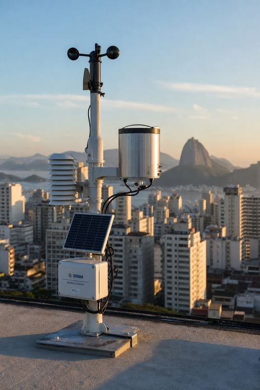
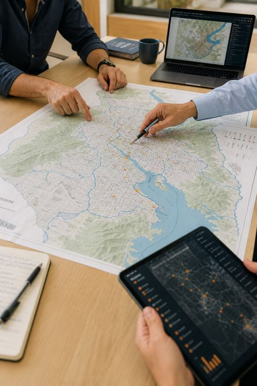
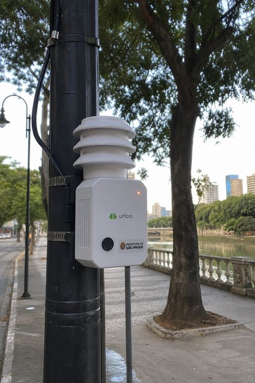
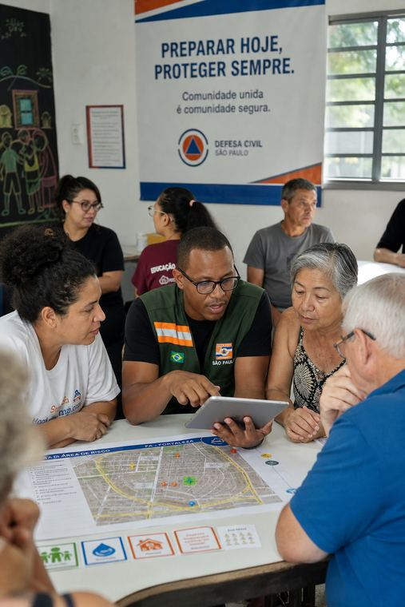
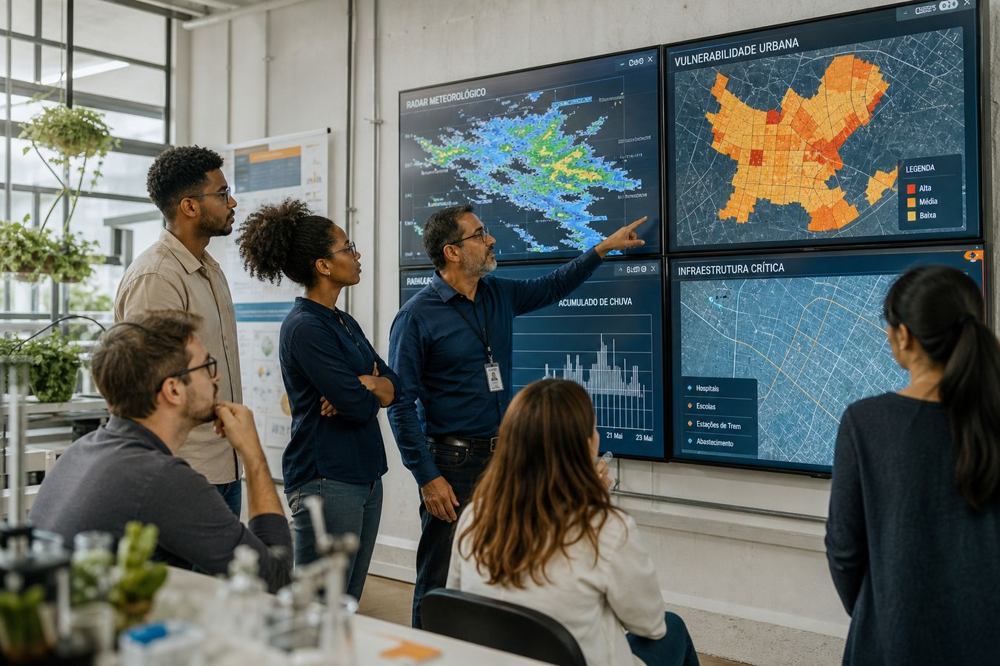

Instituição de pesquisa
Ciência e tecnologia para cidades mais preparadas
A Alertaê pesquisa e desenvolve soluções para tornar os alertas de catástrofes naturais mais rápidos, precisos e úteis para governos e comunidades.
Pesquisa aplicada a serviço de prefeituras, universidades, empresas e comunidades em áreas de risco.
-

-

-

-

O contexto
Cada minuto pode fazer a diferença
Enchentes, deslizamentos, tempestades, secas e outros eventos extremos afetam cidades de diferentes portes. Antecipar riscos exige decisões rápidas, dados confiáveis e comunicação clara com quem vive nas áreas mais expostas.
A Alertaê investiga como integrar ciência, tecnologia e protocolos oficiais para que a informação chegue a tempo — e no formato certo — a gestores públicos e comunidades.

-
Dados fragmentados
Informações de sensores, radares, satélites e órgãos públicos nem sempre conversam entre si, o que dificulta uma leitura integrada do risco.
-
Alertas pouco localizados
Avisos genéricos para um município inteiro podem não indicar quais bairros, encostas ou vias estão realmente mais vulneráveis.
-
Dificuldade de comunicação
Mesmo com dados disponíveis, a mensagem precisa ser compreensível, acessível e alinhada aos canais oficiais usados pela população.
Indicadores institucionais
-
[indicador a definir]
Cidades e territórios em estudo
-
[indicador a definir]
Fontes de dados em integração
-
[indicador a definir]
Linhas de pesquisa ativas
-
[indicador a definir]
Instituições em diálogo
Números institucionais ainda não publicados. Os campos acima são placeholders até a Alertaê disponibilizar dados oficiais.
Como a Alertaê atua
Da coleta de dados ao alerta útil
Um processo contínuo que combina observação, ciência e comunicação — sempre em apoio às autoridades competentes.
-
Coleta de dados
Sensores, radares, satélites, estações meteorológicas e fontes públicas alimentam uma base compartilhada de observação.
-
Pesquisa e análise
Modelos científicos e análise de riscos interpretam os dados e identificam padrões relevantes para o território.
-
Previsão
A pesquisa busca identificar, com antecedência possível, eventos e áreas mais vulneráveis — sem pretender certeza absoluta.
-
Alerta
A informação é organizada de forma clara para autoridades e comunidades, respeitando linguagem acessível e canais oficiais.
Áreas de atuação
Riscos urbanos que a pesquisa acompanha
O trabalho se concentra em ameaças naturais que impactam cidades e na análise territorial que ajuda a prevenir danos.
-
Enchentes e alagamentos
Monitoramento de chuvas, níveis d’água e áreas urbanas sujeitas a inundação.
-
Deslizamentos
Estudo de encostas, saturação do solo e ocupação em áreas de risco geotécnico.
-
Chuvas intensas e tempestades
Acompanhamento de eventos de curta duração com potencial de impacto localizado.
-
Secas e ondas de calor
Análise de estiagem, estresse hídrico e exposição da população a temperaturas extremas.
-
Incêndios e riscos ambientais
Apoio à leitura de condições que favorecem fogo e degradação em áreas urbanas e de interface.
-
Planejamento urbano e vulnerabilidade
Mapeamento de exposição, infraestrutura crítica e desigualdades territoriais de risco.
Diferenciais
O que orienta o trabalho da Alertaê
-
Pesquisa científica aplicada
Métodos revisáveis, transparentes e voltados a problemas reais das cidades.
-
Monitoramento urbano em tempo real
Observação contínua do território a partir de redes de sensores e fontes oficiais.
-
Alertas localizados por região
Esforço para refinar a escala do aviso — do município ao bairro e à encosta.
-
Integração de diferentes fontes de dados
Combinação responsável de dados abertos, estações, radares e satélites.
-
Comunicação acessível
Linguagem clara, formatos inclusivos e respeito à diversidade de públicos.
-
Colaboração pública e acadêmica
Parceria com instituições de ensino, pesquisa e gestão pública.
Pesquisa e inovação
Ciência aberta à colaboração
A Alertaê organiza seu trabalho em linhas de pesquisa, projetos-piloto, publicações e parcerias acadêmicas. Títulos e resultados específicos serão publicados quando houver divulgação oficial.
-
Linhas de pesquisa
Modelagem de riscos, fusão de dados ambientais, comunicação de alertas e análise de vulnerabilidade urbana. [lista oficial a publicar]
-
Projetos-piloto
Experimentos em territórios reais, com prefeituras e comunidades, para testar métodos em condições concretas. [projetos a divulgar]
-
Publicações
Artigos, relatórios técnicos e materiais de divulgação científica. [repositório / DOI a definir]
-
Colaboração acadêmica
Espaço para mestrandos, doutorandos, grupos de pesquisa e intercâmbio entre instituições. [editais a definir]
Para cidades e instituições
Como colaborar com a Alertaê
Prefeituras, defesas civis, universidades, empresas e organizações podem construir juntas soluções mais úteis para o território.
-
Projetos-piloto
Testar métodos de monitoramento e alerta em um recorte urbano definido, com avaliação conjunta.
-
Compartilhamento responsável de dados
Troca de informações públicas ou autorizadas, com governança, finalidade clara e proteção de dados pessoais.
-
Desenvolvimento conjunto de soluções
Coprodução de ferramentas, painéis e protocolos alinhados à rotina das equipes locais.
-
Estudos de vulnerabilidade
Leituras territoriais que apoiam o planejamento urbano e a priorização de ações preventivas.
-
Capacitação técnica
Formação de equipes em leitura de dados, comunicação de risco e uso responsável de alertas.
Perguntas frequentes
Dúvidas comuns
O que é a Alertaê?
A Alertaê é uma instituição de pesquisa dedicada a desenvolver tecnologias e métodos científicos para tornar os alertas de catástrofes naturais mais rápidos, precisos e úteis em cidades.
A Alertaê substitui os órgãos oficiais de defesa civil?
Não. A Alertaê não substitui defesa civil, prefeituras ou órgãos de meteorologia. A pesquisa apoia a tomada de decisão e deve ser integrada aos protocolos oficiais. Em emergência, a população deve seguir as orientações das autoridades competentes.
Que tipos de eventos são monitorados?
O escopo inclui enchentes e alagamentos, deslizamentos, chuvas intensas e tempestades, secas e ondas de calor, incêndios e riscos ambientais, além de estudos de vulnerabilidade urbana. A cobertura efetiva depende de cada projeto e território.
Como uma prefeitura pode participar de um projeto-piloto?
A gestão municipal pode apresentar o território, os desafios e a disponibilidade de dados ou equipes. O diálogo começa pelo formulário de contato. Critérios, prazos e contrapartidas serão definidos caso a caso. [edital ou fluxo oficial a definir]
Como pesquisadores podem colaborar?
Pesquisadores e grupos acadêmicos podem propor colaboração em modelagem, dados, comunicação de risco ou estudos de campo. Envie uma breve descrição do interesse pelo formulário. [programa de visitação / convênio a definir]
Como os dados são tratados e protegidos?
Dados pessoais são tratados conforme a legislação brasileira aplicável, em especial a Lei Geral de Proteção de Dados (LGPD). Dados territoriais e ambientais seguem finalidade específica, minimização e acordos de uso quando houver fontes de terceiros. Detalhes constam na Política de Privacidade.
Contato
Fale com a equipe da Alertaê
Prefeituras, universidades, empresas, organizações e pesquisadores podem iniciar uma conversa por este formulário. Responderemos pelo canal informado.